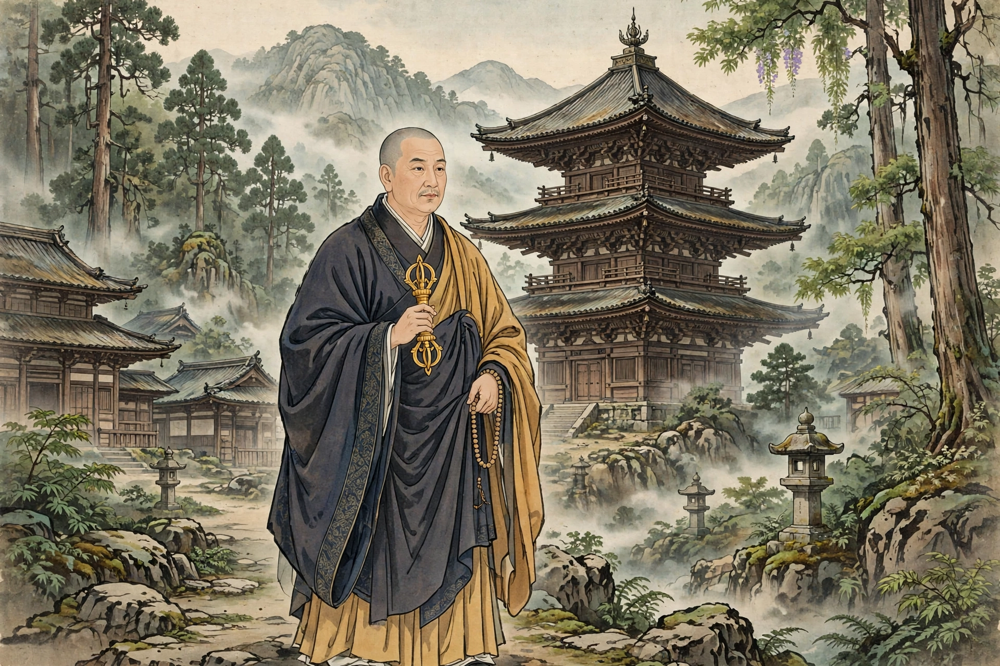

Kūkai (774–835), posthumously Kōbō Daishi, was a Japanese Buddhist monk, calligrapher, poet and engineer who founded the esoteric Shingon school of Buddhism in Japan.
Born in Sanuki (now Kagawa), Kūkai travelled to Tang China in 804, studied esoteric Buddhism under Huiguo in Chang'an, and returned with texts, mandalas and ritual implements. He founded the monastery complex on Mount Kōya and the Shingon-in in Kyoto.
Kūkai is traditionally credited with devising the kana syllabary and the Iroha poem, with major civil engineering works such as the Mannō reservoir, and with writings including the Sangō Shiiki. He is one of Japan's Three Brushes, celebrated calligraphers. Pilgrims still visit his mausoleum at Okunoin, believing he rests in eternal meditation. See Shingon Buddhism and Saichō.